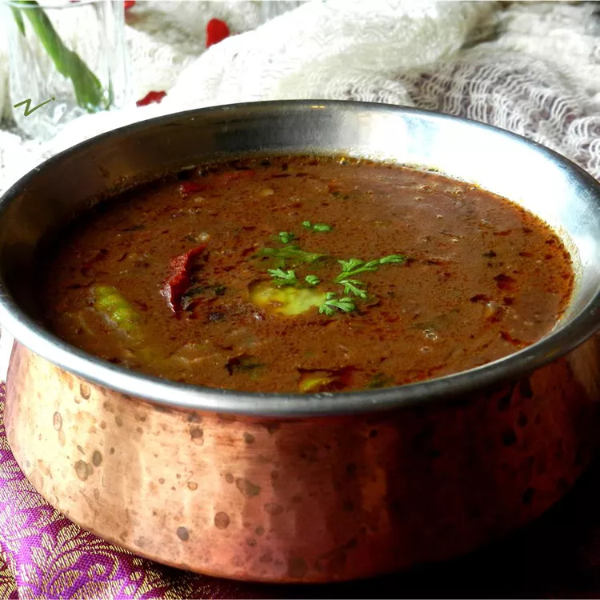

Dal Makhani

Dal Makhani is a rich and creamy North Indian dish made from black lentils
and kidney beans cooked in a tomato-based sauce, often flavored with
butter and cream.
Dal Makhani is a beloved vegetarian delicacy that hails from the Punjab
region of India. To prepare this indulgent dish, black lentils (urad dal)
and kidney beans (rajma) are soaked overnight, then cooked until tender
and creamy. In a separate pan, a delightful combination of onions,
tomatoes, garlic, ginger, and a medley of spices like cumin, coriander,
and garam masala are sautéed until fragrant
The cooked lentils and beans are then added to the spiced mixture, and the
dish is simmered on low heat for an extended period, allowing the flavors
to meld together. Traditionally, a generous amount of butter and cream is
stirred in to give the dish its signature richness and velvety
texture.Served hot with naan, roti, or steamed rice, Dal Makhani is a true
celebration of hearty, comforting flavors that have won the hearts of food
enthusiasts worldwide.
Ingredients
- 1 cup lentils
- ¼ cup dry kidney beans (Optional)
- 5 cups water
- salt to taste
- 2 tablespoons vegetable oil
- 4 cardamom pods
- 1 ½ tablespoons ginger paste
- 1 ½ tablespoons garlic paste
Steps:
- Place lentils and kidney beans in a large bowl; cover with plenty of water. Soak for at least 2 hours or overnight. Drain.
- Cook lentils, kidney beans, 5 cups water, and salt in a pot over medium heat until tender, stirring occasionally, about 1 hour. Remove from heat and set aside. Keep the lentils, kidney beans, and any excess cooking water in the pot.
- Heat vegetable oil in a saucepan over medium-high heat. Cook cumin seeds in the hot oil until they begin to pop, 1 to 2 minutes. Add cardamom pods, cinnamon stick, bay leaves, and cloves; cook until bay leaves turn brown, about 1 minute. Reduce heat to medium-low; add ginger paste, garlic paste, turmeric, and cayenne pepper. Stir to coat.
- Stir tomato puree into spice mixture; cook over medium heat until slightly reduced, about 5 minutes. Add chili powder, coriander, and butter; cook and stir until butter is melted.
- Stir lentils, kidney beans and any leftover cooking water into tomato mixture; bring to a boil, reduce heat to low. Stir fenugreek into lentil mixture. Cover saucepan and simmer until heated through, stirring occasionally, about 45 minutes. Add cream and cook until heated through, 2 to 4 minutes.